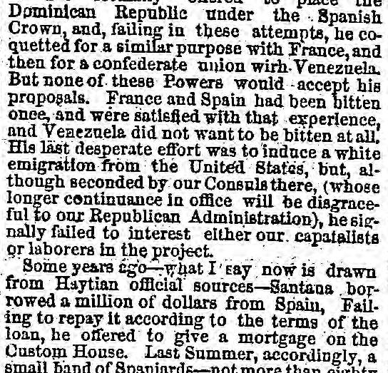
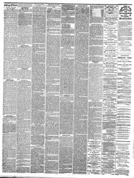

See the full pageVer la página completaFrance and Spain had been bitten onee, and were satlsfled withFrancia y España habían sido mordidas una vez, y estaban satisfechas con
According to the Chicago Daily Tribune on April 6, 1861, Santana failed in his desperate effort to induce white emigration from the United States despite the support of U.S. consuls. The newspaper reported that Santana previously borrowed a million dollars from Spain, and failing to repay it, offered a mortgage on the Custom House, resulting in a small band of Spaniards arriving at St. Domingo to act as collectors and mechanics. This policy fueled the opposition by prompting claims that he was "selling the country to the whites," leading to revolutionary circulars and proclamations as early as last December.Según el Chicago Daily Tribune del 6 de abril de 1861, Santana fracasó en su desesperado intento de promover la emigración de personas blancas procedentes de los Estados Unidos, a pesar del respaldo de los cónsules estadounidenses. El periódico informó que Santana había tomado prestado previamente un millón de dólares de España y, al no poder devolverlo, ofreció una hipoteca sobre las aduanas, lo que resultó en la llegada a Santo Domingo de una pequeña partida de españoles para desempeñarse como recaudadores y artesanos. Esta política alimentó a la oposición al dar pie a acusaciones de que estaba «vendiendo el país a los blancos», provocando circulares y proclamas revolucionarias ya desde el pasado diciembre.
FULL TEXT:TRADUCCIÓN:
Dominican Republic under the Spanish Crown, and, failing in these attempts, he coquetted for a similar purpose with France, and then for a confederate union with Venezuela. But none of these Powers would accept his proposals. France and Spain had been bitten once, and were satisfied with that experience, and Venezuela did not want to be bitten at all. His last desperate effort was to induce a white emigration from the United States, but, although seconded by our Consuls there, (whose longer continuance in office will be disgraceful to our Republican Administration), he signally failed to interest either our capitalists or laborers in the project.República Dominicana bajo la Corona Española, y, fracasando en estos intentos, coqueteó para un propósito similar con Francia, y luego para una unión confederada con Venezuela. Pero ninguna de estas Potencias aceptaría sus propuestas. Francia y España habían sido mordidas una vez, y estaban satisfechas con esa experiencia, y Venezuela no quería ser mordida en absoluto. Su último esfuerzo desesperado fue inducir una emigración blanca de los Estados Unidos, pero, aunque secundado por nuestros Cónsules allí, (cuya continuación más larga en el cargo será desgraciosa para nuestra Administración Republicana), fracasó señalanmente en interesar ya sea a nuestros capitalistas o trabajadores en el proyecto.
Some years ago—what I say now is drawn from Haytian official sources—Santana borrowed a million of dollars from Spain, Failing to repay it according to the terms of the loan, he offered to give a mortgage on the Custom House. Last Summer, accordingly, a small band of Spaniards—not more than eightyHace algunos años —lo que digo ahora se extrae de fuentes oficiales haitianas— Santana pidió prestado un millón de dólares de España, Fracasando en repagarlo según los términos del préstamo, ofreció dar una hipoteca sobre la Aduana. El Verano pasado, en consecuencia, una pequeña banda de españoles —no más de ochenta
Chicago Daily Tribune. Chicago, Ill., April 6, 1861.
See the original at the Library of CongressVer el original en la Biblioteca del Congreso
Edition: Edition 1Edición: edición 1
Page: 2Página: 2
Collection: Chronicling America, Library of CongressColección: Chronicling America, de la Biblioteca del Congreso
LCCN: sn84031490LCCN: sn84031490
Rights: public domain, according to the Library of CongressDerechos: dominio público, según la Biblioteca del Congreso